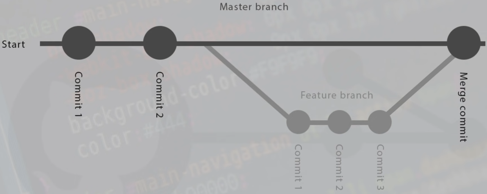

git and github
in a nutshell
Funny words
Repo
Generally whole project. Different projects = different repos.
If configured correctly, there will be .git file in root folder of the project.
Commits
Commits are "save points" of the project, for example: after adding a feature, fixing a bug, or making it a feature (obviously).
Commits have 3 "stages":
-
Modified
Changed the file; Not commited.
-
Staging
Add all changed files that You want to commit.
-
Commited
Files from staging area are added to the commit.
There are 3 ways to undo commits:
-
Checkout commit
Just to see previous version. It is completely safe, doesn't save any potentian changes to the commits.
-
Revert commit
Lets you undo previous commit, basically delete it. Could cause some bugs.
-
Reset commit
Permanently takes You back to previous commit. Very dangerous.
Branch
Isolated enviroment,to work on certain "line" (part) of code. For example, to develop new features before joining them to master branch.
Master branch represents main, stable version of the code.

Merging branches
- Checkout to Master branch, or the main branch you want to merge into
- git merge <branch_name>
Useful commands |
||
| git init | create a repo in current dir | B A S I C |
| git status | the list of files currently in "changed" and "staging" status | |
| git add <filename> | add file to staging area | C O M M I T S |
| git add . | add all files in dir to staging area | |
| git commit -m <message> | commit all files from staging area, with message | |
| git log |
shows history of commits with all info about authors etc press q to leave |
|
| git log --oneline | history in one line, just ID and message | |
| git checkout <commit_ID> | Commit checkout. See one of previous commits. |
C H E C K O U T R E V E R T R E S E T |
| git checkout <branchName> |
Go back to latest commit in the branch. Default branch is Master branch. |
|
| git revert <commit_ID> |
Revert commit (undo some feature from previous commit). If you're stuck, press "." and then type "wq". |
|
| git reset <commit_ID> |
Reset to previous commit. Permanently go back. Use --hard flag to force delete all files. |
|
| git branch <branch_name> | Create new branch |
B R A N C H E S |
| git branch -a | See list of all branches | |
| git checkout <branch_name> | Switch the branch You're working on. | |
| git branch -d <branch_name> |
Delete branch. Only works if we merged the branch already. To delete without merging use: git branch -D <branch_name>. |
|
| git merge <branch_name> | Merge branch (into the branch You're currently on) | |